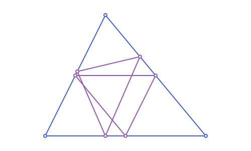
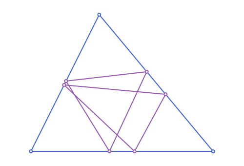
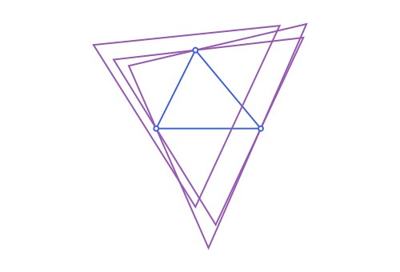
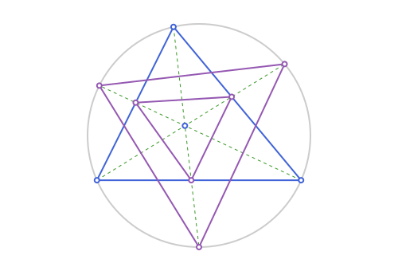

Triangles: Derived Triangles
The running example, the scalene triangle used throughout this page:
using Apollonius
A, B, C = APPoint(0.0, 0.0), APPoint(8.0, 0.0), APPoint(3.0, 6.0)
t = APTriangle(A, B, C)Derived triangles
These take an APTriangle and return another APTriangle built from it:
| Function | Vertices are... |
|---|---|
medial_triangle | the three edge midpoints |
anticomplementary_triangle | B+C-A, C+A-B, A+B-C: the inverse of medial_triangle (t is its medial triangle) |
orthic_triangle | the three altitude feet |
reflection_triangle | each vertex reflected across its opposite side line (unlike orthic_triangle, which projects instead) |
contact_triangle | the three points where the incircle touches the sides |
extouch_triangle | the three points where the excircles touch the sides |
excentral_triangle | the three excenters |
tangential_triangle | tangents to the circumcircle at each vertex, pairwise intersected |
napoleon_triangle | centers of equilateral triangles erected on each side (napoleon_point is its centroid; by Napoleon's theorem, always t's own centroid too) |
morley_triangle | intersections of adjacent angle trisectors |
pedal_triangle | projections of a chosen point onto the three sides |
cevian_triangle / circumcevian_triangle | feet of cevians through a chosen point (extended to the circumcircle, for the latter) |
mt = medial_triangle(t)APTriangle([5.5, 3.0], [1.5, 3.0], [4.0, 0.0])The medial triangle is always similar to t at half scale, sharing its centroid, and its own circumcircle is exactly t's nine-point circle.
anticomplementary_triangle(mt) ≈ t # medial_triangle and anticomplementary_triangle are inversestrueoh = orthic_triangle(t) # altitude feet (projections)
rt = reflection_triangle(t) # each vertex reflected, instead of projected, across the opposite side
distance(t[1], rt[1]) ≈ 2 * distance(t[1], oh[1]) # reflecting doubles the projected distancetrue
See script
using Apollonius, Luxor
import Luxor: julia_red, julia_blue, julia_green, julia_purple
import Apollonius: rotate, translate, distance, midpoint
lxm = @prepare_to_picture! width=500 height=300 margin=30 begin
A, B, C = APPoint(0.0, 0.0), APPoint(8.0, 0.0), APPoint(3.0, 6.0)
t = APTriangle(A, B, C)
mt = medial_triangle(t)
ot = orthic_triangle(t)
end
begin
Drawing(lxm.width, lxm.height, :svg)
origin(); fontsize(15)
sethue(julia_blue)
path(t, action=:stroke)
sethue(julia_purple)
path([mt, ot], action=:stroke)
sethue("white"); path([A, B, C], action=:fillpreserve); sethue(julia_blue); strokepath()
sethue("white"); path(vertices(mt), action=:fillpreserve); sethue(julia_purple); strokepath()
sethue("white"); path(vertices(ot), action=:fillpreserve); sethue(julia_purple); strokepath()
finish()
preview()
endct = contact_triangle(t) # incircle touch points
et = extouch_triangle(t) # excircle touch points
et_center = excentral_triangle(t) # the 3 excenters, as a triangle
tt = tangential_triangle(t) # tangent lines to the circumcircle at each vertex, intersected pairwise
is_on_line(circumcenter(t), APLine(t[1], tt[1])) == false # circumcenter isn't generally on a tangent linetrue
See script
using Apollonius, Luxor
import Luxor: julia_red, julia_blue, julia_green, julia_purple
import Apollonius: rotate, translate, distance, midpoint
lxm = @prepare_to_picture! width=500 height=340 margin=30 begin
A, B, C = APPoint(0.0, 0.0), APPoint(8.0, 0.0), APPoint(3.0, 6.0)
t = APTriangle(A, B, C)
ct = contact_triangle(t)
et = extouch_triangle(t)
end
begin
Drawing(lxm.width, lxm.height, :svg)
origin()
sethue(julia_blue)
path(t, action=:stroke)
sethue(julia_purple)
path([ct, et], action=:stroke)
sethue("white"); path([A, B, C], action=:fillpreserve); sethue(julia_blue); strokepath()
sethue("white"); path(vertices(ct), action=:fillpreserve); sethue(julia_purple); strokepath()
sethue("white"); path(vertices(et), action=:fillpreserve); sethue(julia_purple); strokepath()
finish()
preview()
end
See script
using Apollonius, Luxor
import Luxor: julia_red, julia_blue, julia_green, julia_purple
import Apollonius: rotate, translate, distance, midpoint
lxm = @prepare_to_picture! width=500 height=340 margin=30 begin
A, B, C = APPoint(0.0, 0.0), APPoint(8.0, 0.0), APPoint(3.0, 6.0)
t = APTriangle(A, B, C)
tt = tangential_triangle(t)
xt = excentral_triangle(t)
rt = reflection_triangle(t)
end
begin
Drawing(lxm.width, lxm.height, :svg)
origin()
sethue(julia_blue)
path(t, action=:stroke)
sethue(julia_purple)
path([tt, xt, rt], action=:stroke)
sethue("white"); path([A, B, C], action=:fillpreserve); sethue(julia_blue); strokepath()
finish()
preview()
endnp_tri = napoleon_triangle(t) # always equilateral (Napoleon's theorem)
distance(np_tri[1], np_tri[2]) ≈ distance(np_tri[2], np_tri[3]) ≈ distance(np_tri[3], np_tri[1])
napoleon_point(t) ≈ centroid(t) # Napoleon's theorem: same point either waytruemor = morley_triangle(t) # always equilateral (Morley's trisector theorem)
distance(mor[1], mor[2]) ≈ distance(mor[2], mor[3]) ≈ distance(mor[3], mor[1])true
See script
using Apollonius, Luxor
import Luxor: julia_red, julia_blue, julia_green, julia_purple
import Apollonius: rotate, translate, distance, midpoint
lxm = @prepare_to_picture! width=500 height=340 margin=30 begin
A, B, C = APPoint(0.0, 0.0), APPoint(8.0, 0.0), APPoint(3.0, 6.0)
t = APTriangle(A, B, C)
np_tri = napoleon_triangle(t)
mor = morley_triangle(t)
end
begin
Drawing(lxm.width, lxm.height, :svg)
origin()
sethue(julia_blue)
path(t, action=:stroke)
sethue(julia_purple)
path([np_tri, mor], action=:stroke)
sethue("white"); path([A, B, C], action=:fillpreserve); sethue(julia_blue); strokepath()
finish()
preview()
endcev = cevian_triangle(t, incenter(t)) # feet of the cevians through the incenter
ccev = circumcevian_triangle(t, incenter(t)) # same cevians, extended to the circumcircle
is_on_segment(cev[1], APSegment(t[2], t[3])), is_on_line(ccev[1], APLine(t[1], incenter(t)))(true, true)
See script
using Apollonius, Luxor
import Luxor: julia_red, julia_blue, julia_green, julia_purple
import Apollonius: rotate, translate, distance, midpoint
lxm = @prepare_to_picture! width=500 height=340 margin=30 begin
A, B, C = APPoint(0.0, 0.0), APPoint(8.0, 0.0), APPoint(3.0, 6.0)
t = APTriangle(A, B, C)
cc = circumcircle(t)
I = incenter(t)
cev = cevian_triangle(t, I)
ccev = circumcevian_triangle(t, I)
segs = [APSegment(v, w) for (v, w) in zip((A, B, C), vertices(ccev))]
end
begin
Drawing(lxm.width, lxm.height, :svg)
origin()
sethue("gray80")
path(cc, action=:stroke)
gsave()
setline(1); setdash("dash")
sethue(julia_green)
path(segs, action=:stroke)
grestore()
sethue(julia_blue)
path(t, action=:stroke)
sethue(julia_purple)
path([cev, ccev], action=:stroke)
sethue("white"); path([A, B, C], action=:fillpreserve); sethue(julia_blue); strokepath()
sethue("white"); path(vertices(cev), action=:fillpreserve); sethue(julia_purple); strokepath()
sethue("white"); path(vertices(ccev), action=:fillpreserve); sethue(julia_purple); strokepath()
sethue("white"); path([I], action=:fillpreserve); sethue(julia_blue); strokepath()
finish()
preview()
endA triangle around a circle
circumscribed_triangle(c, p1, p2, p3) is the triangle whose sides touch the circle c at the three points, each side lying on the tangent at its point. Vertex i is opposite the side that touches at p_i, and c is the incircle of the result when the points are not in a half circle:
cc_t = APCircle2(APPoint(0.0, 0.0), 1.0)
ps_t = [point_on(cc_t, a) for a in (0.5, 2.5, 4.5)]
tt_c = circumscribed_triangle(cc_t, ps_t...)
isapprox(incircle(tt_c), cc_t; atol=1e-9)true